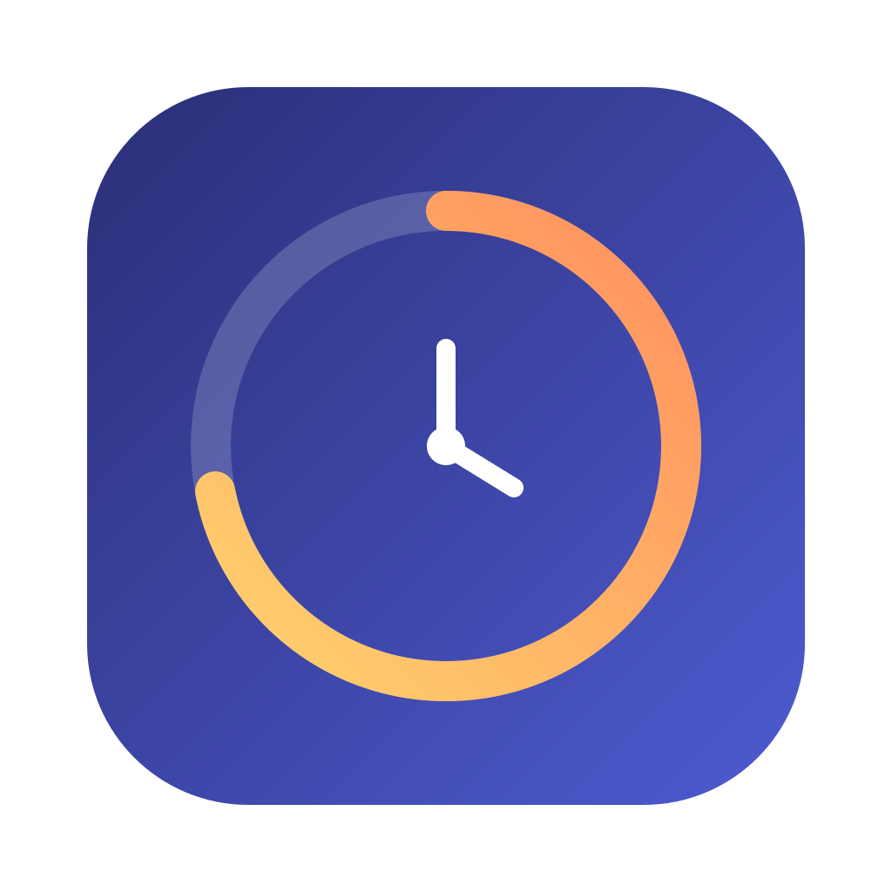

AI USAGE
05:46Claude · IDE21%
GPT Plus53%
Antigravity68%

AI Usage WidgetA compact desktop widget for Claude, GPT Plus/Codex, Antigravity, Grok, Gemini and OpenRouter. No extra account. No analytics backend.
Latest release · Community builds are currently unsigned
Detects supported CLI and IDE sessions already available on your computer.
Shows percentages, reset times, warnings and provider-specific limits without calling a model.
Reads local transcripts for session context and today’s activity. Nothing is uploaded to us.
Choose layout, palette, opacity, position, compact mode and which providers appear.
Platform-specific credential and process integration lives behind the same compact idea: open the app and let it find what is already signed in.
x64 installer · bilingual UI · launch at login
Apple Silicon + Intel · menu bar · launch at login
The app has no telemetry account, ads or analytics server. Provider credentials remain in the desktop main process and are used only with the service that issued them.